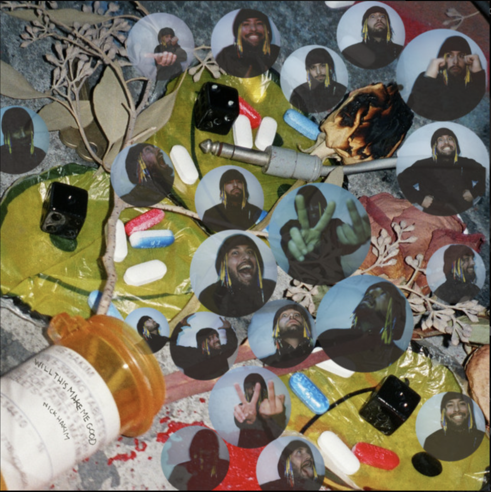
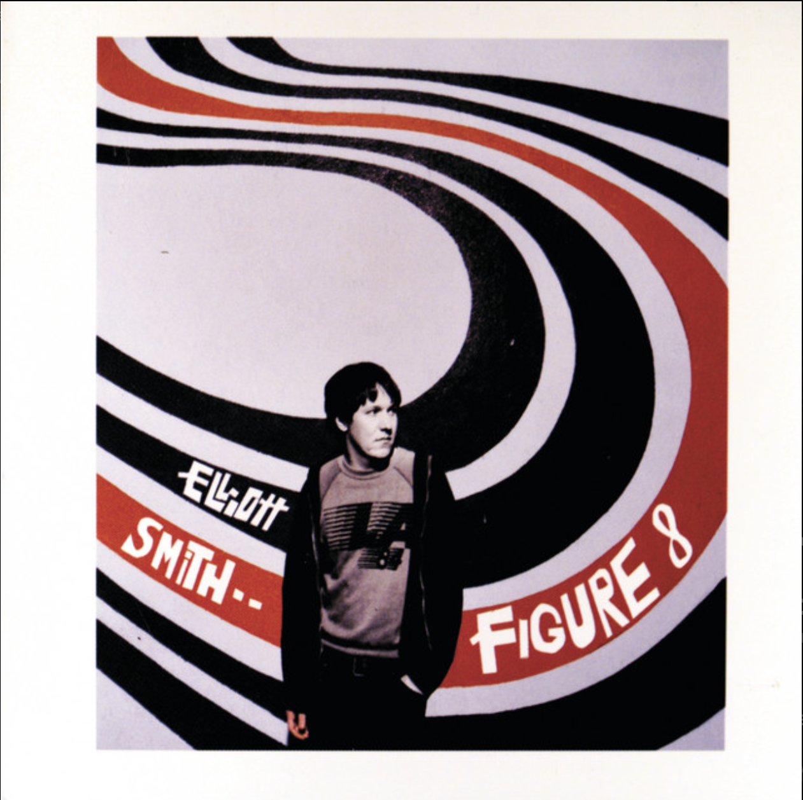
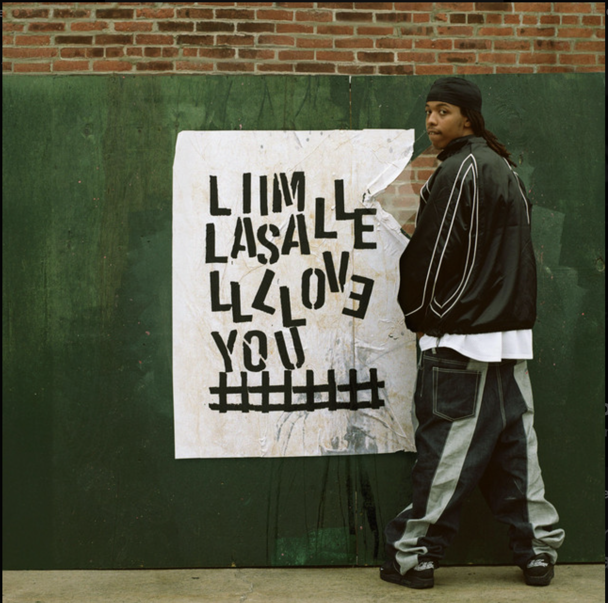
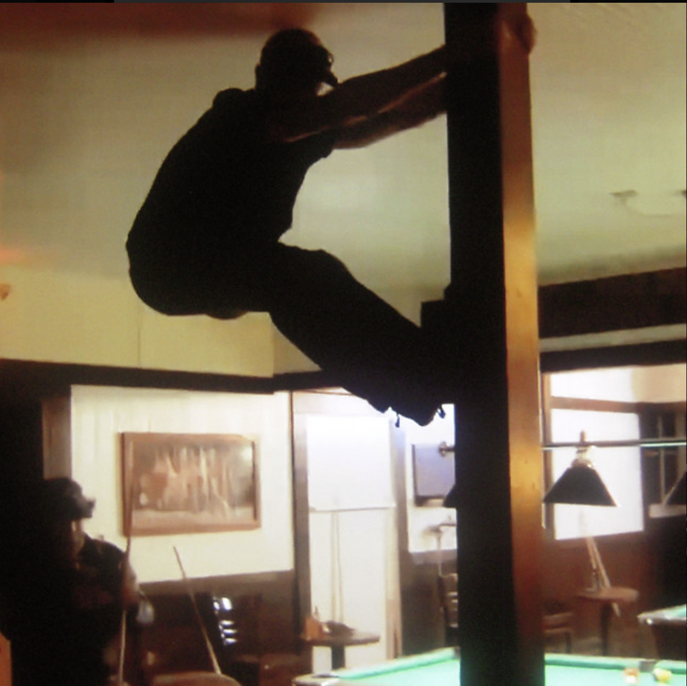
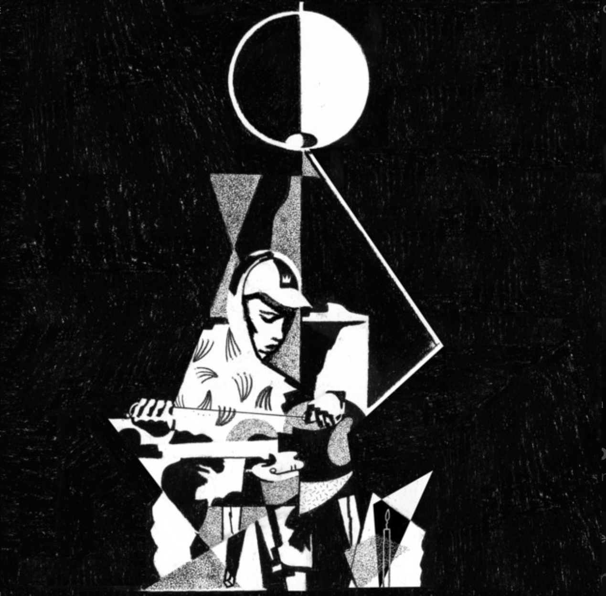

Some of my favorite lyrics
"Can you tell that this faith is changed?
This heart, brain, pain, two separate ways
Can you tell that this face is changed?
This heart, brain, pain, two separate way" Neptune Estate by King Krule
"There's a mean bone in my body
It's connected to the problems
That I won't take for an answer
And I won't take that from you
Because I'd Hurt a fly" i would hurt a fly by Built to Spill